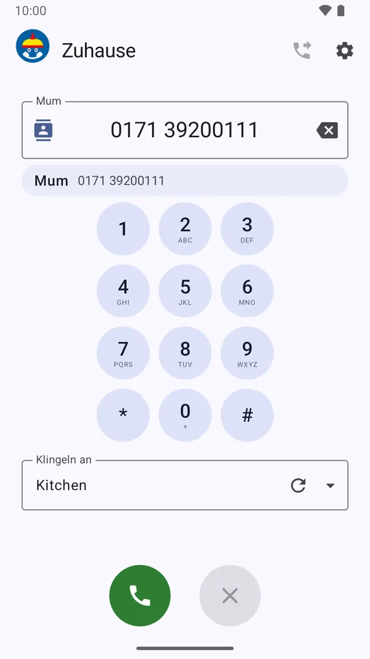
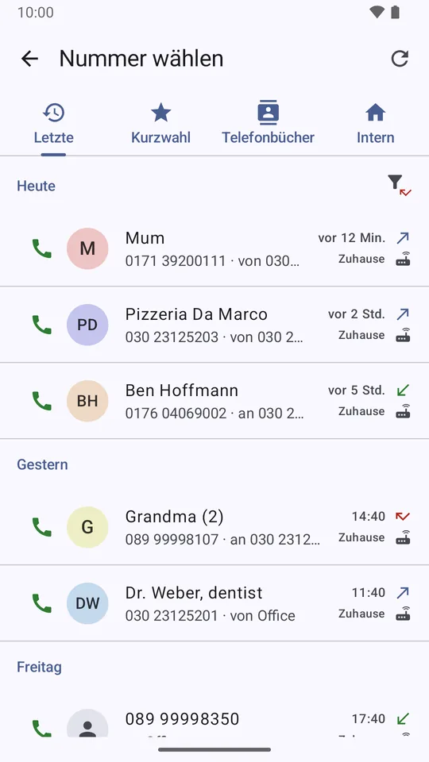
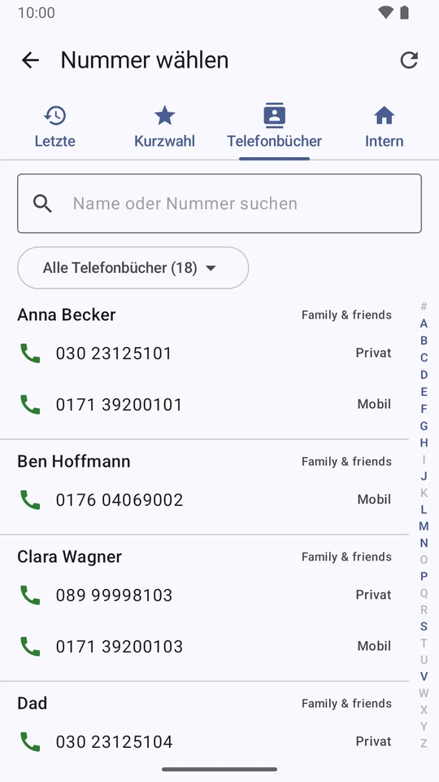
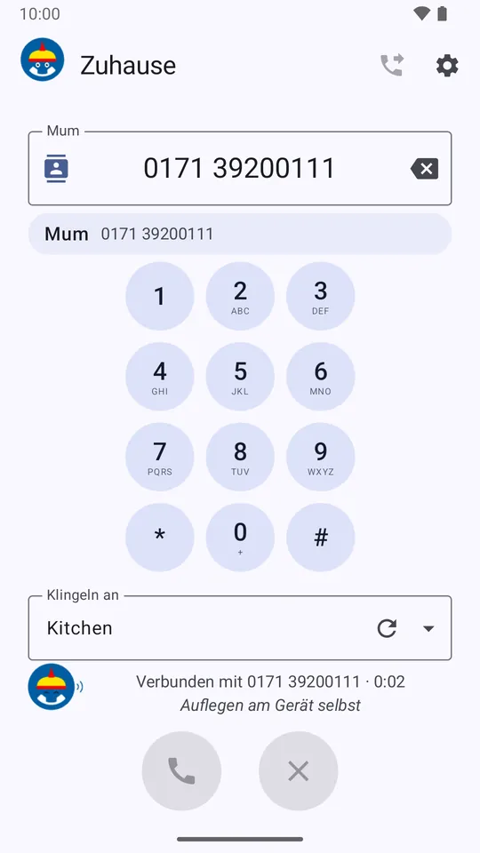
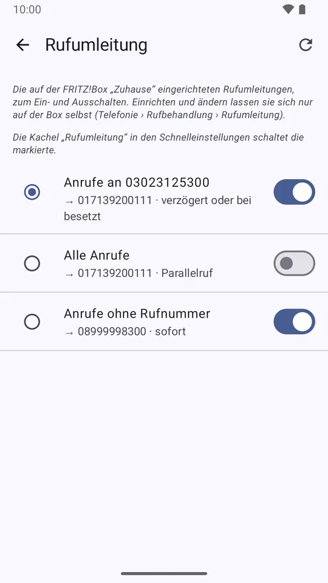

Auf dem Smartphone wählen, am FRITZ!Box-Headset telefonieren
Pickelhaube ist eine kleine Android-App, die Anrufe über deine FRITZ!Box startet – genau wie die Wählhilfe des Routers (Click-to-Dial).

Such dir auf deinem Android-Telefon eine Nummer aus, tipp auf den grünen Knopf – und das Gerät, das du an der FRITZ!Box gewählt hast, klingelt: ein DECT-Headset, eine Freisprecheinrichtung oder ein Mobilteil. Nimm ab, und die FRITZ!Box wählt die Nummer von dort aus. Das Gespräch läuft über deinen Festnetz- oder Internetanschluss, nicht über deinen Mobilfunkvertrag.
Wann es sich lohnt
Headsets und Freisprecher
Der Hauptzweck. DECT-Headsets und Konferenz-Freisprecher an einer FRITZ!Box haben keine Tastatur – sie können nicht selbst wählen. Pickelhaube wählt für sie, mit deinem Smartphone als Tastatur und Adressbuch.
Mehrere Standorte
Zuhause, Büro, Zweitwohnung: Mit mehreren eingerichteten FRITZ!Boxen wählst du überall gleich, aus denselben Kontakten und Kurzwahlen. Die App nimmt die Box des Netzes, in dem du gerade bist.
Nur normale Telefone
Geringer Nutzen. Ein normales Mobilteil kann selbst wählen – du gewinnst nur das Wählen aus den Kontakten deines Smartphones und den letzten Anrufen, statt auf dem Mobilteil zu tippen.
Die App holen
Pickelhaube ist auf dem Weg zu Google Play: Der geschlossene Test ist abgeschlossen – danke an alle, die mitgemacht haben –, und die App ist bei Google in der Prüfung für die Veröffentlichung. Bis dahin gibt es sie auf GitHub, als Vollversion, die auch die Anrufe der Telefon-App deines Smartphones zeigen kann.
Von GitHub herunterladenPrüfen, ob der Download echt ist
Jede Version von Pickelhaube auf GitHub ist mit demselben Zertifikat signiert. Sein SHA-256-Fingerabdruck:
7D:
Zum Vergleichen: auf einem Computer mit apksigner verify --print-certs aus dem Android SDK,
oder auf dem Telefon mit einer App wie AppVerifier. Android prüft das ebenfalls: Ein Update installiert sich
nur dann über die vorhandene Version, wenn es mit demselben Zertifikat signiert ist.
Was sie kann




Wählhilfe
Nutzt die TR-064-Schnittstelle der FRITZ!Box: Die Box lässt zuerst dein Telefon klingeln und wählt dann die Zielnummer. Vertippt? Tipp in der Nummer direkt hinter die Stelle und korrigier sie dort.
Telefonbücher & letzte Anrufe
Nimm Nummern aus den Telefonbüchern und der Anrufliste der Box – und auf Wunsch aus den Kontakten deines Smartphones. Letzte Anrufe nach Tagen, die verpassten auf einen Tipp und ein Anrufknopf an jeder Nummer. Auf Wunsch „Über FRITZ!Box anrufen“ direkt in der Kontakte-App deines Smartphones.
Gesprächsstatus live
Sieh, ob das Telefon klingelt, ob das Gespräch verbunden ist und wie lange es gedauert hat. Besetzt? Mit einem Tipp noch einmal versuchen.
Kurzwahl
Deine eigenen Kurzwahlen 1–9, dazu die Kurzwahlen 00–99 der FRITZ!Box, die du von **7 kennst. Aus Versehen entfernt? Rückgängig.
Mehrere Boxen
Zuhause und Büro? Pickelhaube erkennt, welche FRITZ!Box im aktuellen Netz ist, und nimmt diese. Unterwegs sagt sie dir, was hilft.
Rufumleitung
Schalte die auf deiner Box eingerichteten Rufumleitungen ein und aus – auch über eine Kachel in den Schnelleinstellungen.
Vorschläge beim Tippen
Ab der dritten Ziffer passende Nummern und Namen aus deinen Telefonbüchern und letzten Anrufen – auch über die Buchstaben auf den Tasten. Eine vollständig getippte Nummer zeigt, wem sie gehört.
Interne Gespräche
Ruf ein Telefon der Box von einem anderen aus an – die Küche vom Arbeitszimmer.
Widget für den Startbildschirm
Die Nummern, die du am häufigsten anrufst, nur einen Tipp entfernt – jedes Widget mit seiner eigenen Liste.
Willkommens-Tour
Beim ersten Start führt dich eine freundliche Anleitung Schritt für Schritt zur Verbindung mit deiner Box.
Zum Aktualisieren ziehen
Etwas auf der Box geändert? Zieh das Wählfeld nach unten, und alles wird neu von ihr gelesen.
Tablets und Querformat
Quer gehalten rückt die Tastatur neben den Rest – auf dem Telefon und auf dem Tablet.
Ein Helm mit Charakter
Die Pickelhaube klingelt mit, während dein Telefon klingelt, nickt, wenn das Gespräch verbunden ist, und winkt zum Abschied – und Tastentöne gibt es auch, wenn du magst.
Zur ganzen Anleitung →
Fragen und Antworten →
Was sich in jeder Version geändert hat →
Was du brauchst
- Ein Android-Telefon mit Android 8.0 oder neuer
- Eine FRITZ!Box mit Telefonie, mit eingeschalteter Wählhilfe und TR-064-Zugriff (wie)
- Das Telefon im selben Heimnetz wie die Box – oder per VPN damit verbunden
Datenschutz in Kürze
Pickelhaube hat kein Konto, keine Werbung und keinen eigenen Cloud-Dienst. Sie spricht nur mit den FRITZ!Boxen, die du einrichtest; dein Router-Kennwort wird verschlüsselt auf dem Telefon gespeichert. Einzelheiten stehen in der Datenschutzerklärung.
Sprachen
Deutsch, Englisch, Niederländisch, Französisch, Italienisch, Spanisch und Polnisch.
Feedback
Etwas funktioniert nicht, eine Idee, eine Frage oder ein Lob? Sag es mir über das Feedback-Formular.